DANH SÁCH PHÍM TẮT
Phím tắt, tổ hợp phím truy cập nhanh (Shortcut key)
Để thuận tiện cho việc thao tác khi sử dụng phần mềm, chúng tôi xin đưa ra danh sách các phím tắt, tổ hợp phím truy cập nhanh trên phần mềm ECUS5VNACCS để quý doanh nghiệp tham khảo.
Phím truy cập nhanh được chia làm 2 loại: Phím tắt đơn (chỉ cần nhấn 1 phím) và Phím tắt tổ hợp (nhấn đồng thời tổ hợp phím), cụ thể như sau.
A – Các chức năng truy cập bằng cách sử dụng tổ hợp phím:
Phím tắt tổ hợp sử dụng Ctrl:
- Ctrl + L: Nhấn tổ hợp phím này để khóa chương trình (khi rời bàn làm việc)
- Ctrl + Q: Nhấn tổ hợp phím này để thoát hẳn chương trình phần mềm (tắt phần mềm)
Phím tắt tổ hợp sử dụng Alt:
Truy cập nhanh vào các menu chính của phần mềm dựa vào các tổ hợp phím sau:
- Alt + H: Nhấn tổ hợp phím này để truy cập menu Hệ thống
- Alt + L: Nhấn tổ hợp phím này để truy cập menu Loại hình
- Alt + T: Nhấn tổ hợp phím này để truy cập menu Tờ khai hải quan
- Alt + N: Nhấn tổ hợp phím này để truy cập menu Nghiệp vụ khác
- Alt + S: Nhấn tổ hợp phím này để truy cập menu Sổ quyết toán
- Alt + K: Nhấn tổ hợp phím này để truy cập menu Kế toán kho
- Alt + B: Nhấn tổ hợp phím này để truy cập menu Báo cáo
- Alt + D: Nhấn tổ hợp phím này để truy cập menu Danh mục
Ví dụ, sử dụng tổ hợp phím Alt + L sẽ sổ menu Loại hình như sau:
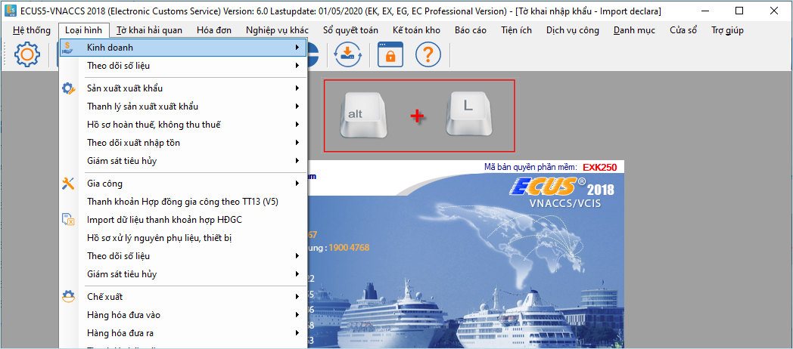
Sau khi truy cập vào để menu sổ xuống bạn có thể giữ nguyên phím Alt sau đó nhấn vào các phím chữ cái đầu tiền của mục muốn truy cập tiếp. Nếu trong danh sách có nhiều mục cùng chữ cái đầu thì bạn nhấn nhiều lần để truy cập.
Truy cập nhanh bằng tổ hợp phím khi đang thao tác trên các form khác:
- Tab hoặc Enter: Để di chuyển nhanh các chỉ tiêu nhập liệu
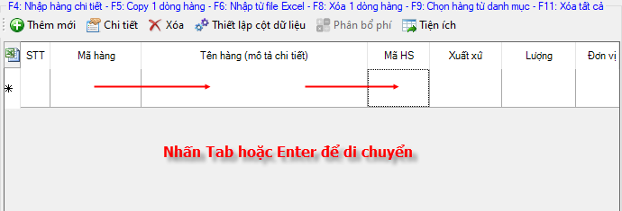
- Space bar: Để sổ danh sách tại các chỉ tiêu là Combobox
- Phím mũi tên: Để di chuyển lên xuống danh sách
- Esc: Để đóng form đang mở
- Alt + G: Nhấn tổ hợp phím này để Ghi dữ liệu đang nhập
- Alt + X: Nhấn tổ hợp phím này để Xóa dữ liệu đang chọn
- Alt + I: Nhấn tổ hợp phím này để In dữ liệu
- Alt + N: Nhấn tổ hợp phím này để đóng form đang mở
Ví dụ, tại form nhập danh sách nguyên phụ liệu SXXK, bạn nhấn tổ hợp phím Alt + G sẽ kích hoạt chức năng Ghi dữ liệu:
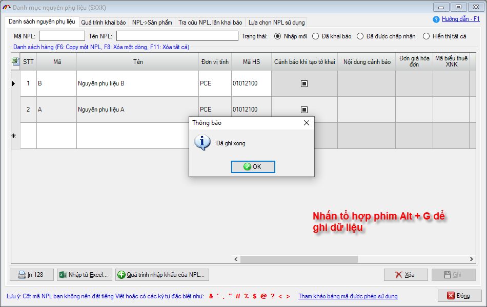
Truy cập nhanh khi đang ở cửa sổ thông báo:
- Alt + Y: Nhấn tổ hợp phím này để đồng ý (Yes)
- Alt + N: Nhấn tổ hợp phím này để không đồng ý (No)
- Alt + C: Nhấn tổ hợp phím này để hủy thao tác, tắt thông báo (Cancel)
Ví dụ, tại form thông báo có muốn xóa danh sách nguyên phụ liệu SXXK, bạn nhấn tổ hợp phím Alt + Y để đồng ý xóa, Alt + N để không xóa:
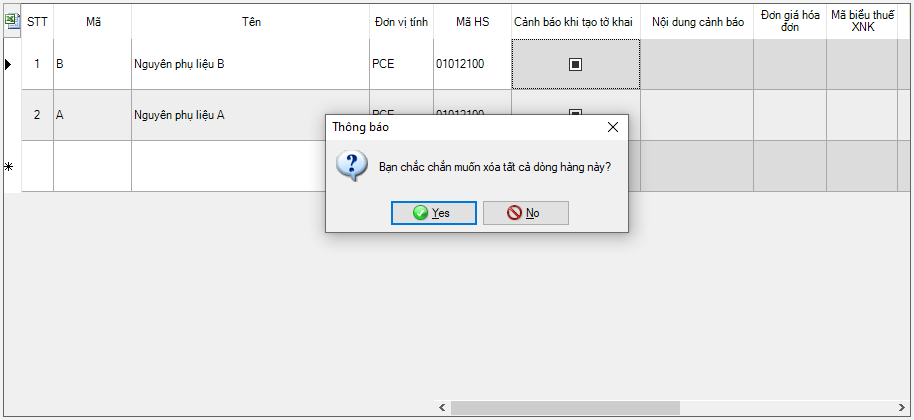
Ngoài ra còn có nhiều các tổ hợp phím tắt ở trên các form khác nhau, để sử dụng chúng bạn chỉ cần nhấn giữ phím Alt, các chức năng có thể truy cập được sẽ hiển thị dấu gạch chân phía dưới của chữ cái để bạn biết:
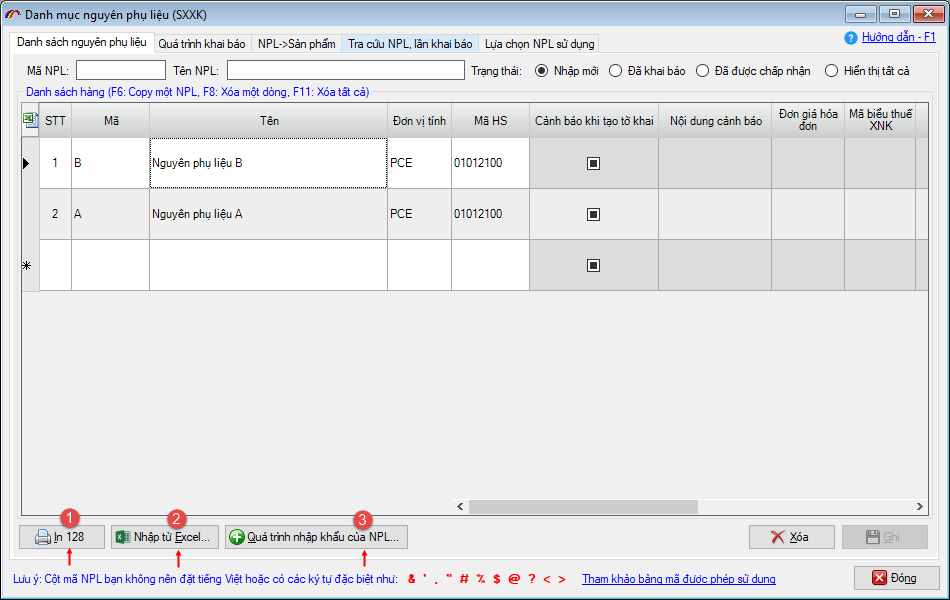
Như ví dụ trên:
- Alt + I: Nhấn tổ hợp phím này để thực hiện in danh sách nguyên phụ liệu (1)
- Alt + E: Nhấn tổ hợp phím này để mở chức năng nhập từ excel (2)
- Alt + Q: Nhấn tổ hợp phím này để mở quá trình nhập khẩu của nguyên phụ liệu (3)
B – Các chức năng truy cập bằng cách sử dụng phím tắt đơn:
Các phím tắt đơn này chủ yếu được sử dụng để gọi chức năng khi bạn đang ở các form nhập liệu như: Danh mục nguyên phụ liệu, sản phẩm, phụ lục hợp đồng, phụ kiện hợp đồng, danh sách hàng tờ khai, báo cáo quyết toán…
Các phím tắt chung:
- F1: Nhấn phím chức năng này để mở hướng dẫn cho form đang mở
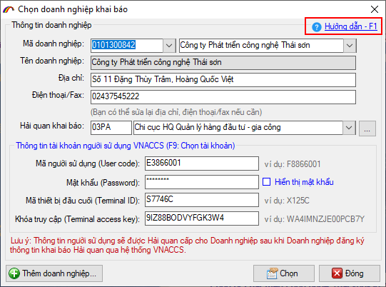
- F2: Phím F2 là phím dùng để mở các chỉ tiêu đặc biệt trên tờ khai VNACCS đã được khóa tạm thời (người dùng không thể nhập liệu được, vì các chỉ tiêu này thông thường do hệ thống tính và trả về), khi muốn nhập trực tiếp dữ liệu vào để khai báo, người khai đặt trỏ chuột vào chỉ tiêu và nhấn phím F2 để mở.
Các chỉ tiêu này bao gồm:
- Chỉ tiêu Số tờ khai đầu tiên(1), Số nhánh (2) và Tổng số nhánh (3) trên thông tin chung của tờ khai.
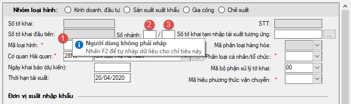
- Chỉ tiêu Tổng hệ số phân bổ trị giá trên thông tin chung 2 của tờ khai nhập khẩu IDA.
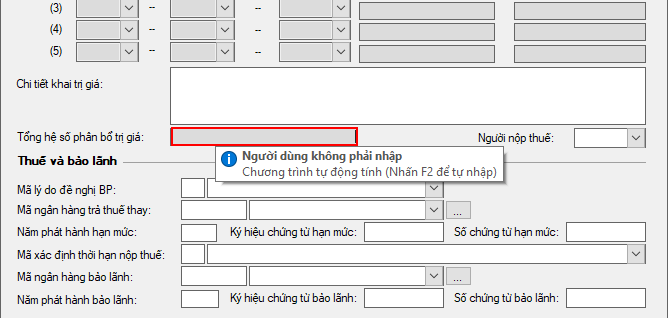
- Chỉ tiêu Thuế suất (1) và Trị giá tính thuế (2) trên form nhập liệu chi tiết hàng hóa của tờ khai VNACCS.
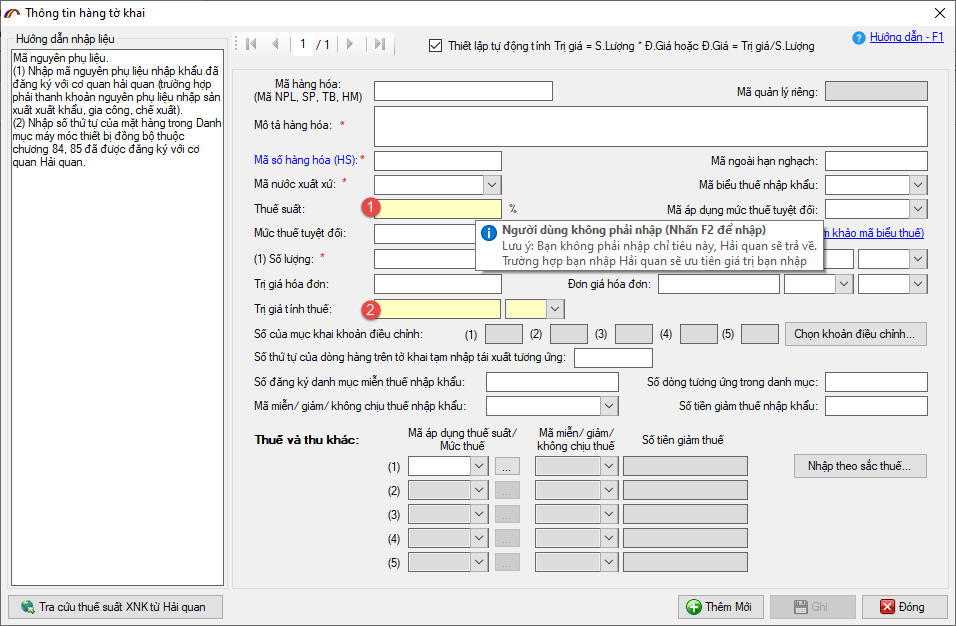
- F3: Lấy ngày hiện tại cho chỉ tiêu ngày tháng (con trỏ chuột đang ở chỉ tiêu ngày tháng)
- F4: Hiện lịch chọn ngày cho chỉ tiêu ngày tháng (con trỏ chuột đang ở chỉ tiêu ngày tháng)
- F5: Xóa dữ liệu chỉ tiêu ngày tháng đang chọn (con trỏ chuột đang ở chỉ tiêu ngày tháng)
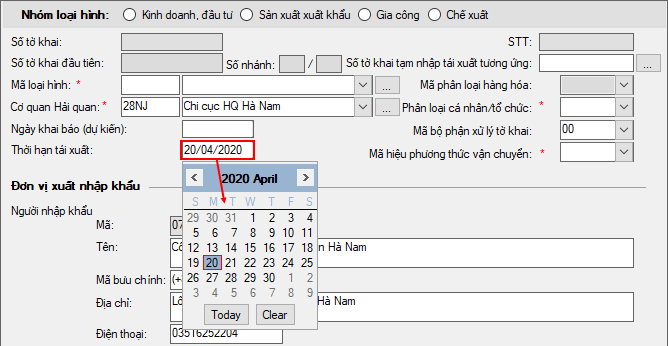
- F8: Nhấn phím này để xóa dòng đang chọn
- F9: Nhấn phím này để chọn hàng từ danh mục
- F11: Nhấn phím này để xóa toàn bộ danh sách.
Các phím tắt đối với phần danh mục hàng hóa, phụ lục hợp đồng gia công:
- F6: Nhấn phím này để copy dòng hàng đang chọn ra một dòng hàng mới.
Các phím tắt đối với form nhập định mức:
- F6: Nhấn phím này để mở chức năng nhập nhiều mã định mức từ file excel.
- F12: Nhấn phím này để mở chức năng nhập một mã định mức từ file excel.
Các phím tắt đối với danh sách hàng tờ khai, phiếu nhập xuất kho:
- F4: Nhấn phím này để mở form nhập chi tiết dòng hàng theo tiêu chí của VNACCS
- F5: Nhấn phím này để copy dòng hàng đang chọn
- F6: Nhấn phím này để mở chức năng nhập danh sách hàng từ file excel
Còn nhiều các phím tắt trên các form nhập liệu khác nhau, khi sử dụng doanh nghiệp để ý phía trên danh sách đều có phần chữ ghi chú phím tắt có thể thực hiện:
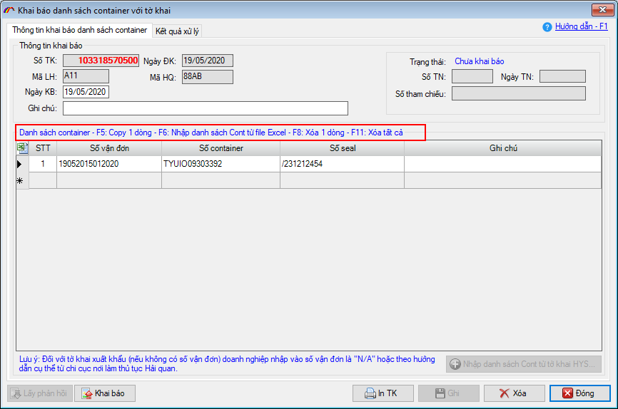
Lưu ý: Phần mềm ECUS5VNACCS có chức năng mà doanh nghiệp cần biết đó là, bất kỳ form nhập liệu nào cũng đều có chức năng nhập từ file excel và có thể in kết xuất được ra file excel. Chức năng in kết xuất ra file excel có thể được thực hiện bằng cách nhấn các nút in hoặc nhấn vào biểu tượng excel ở góc trái bên trên của form danh sách:
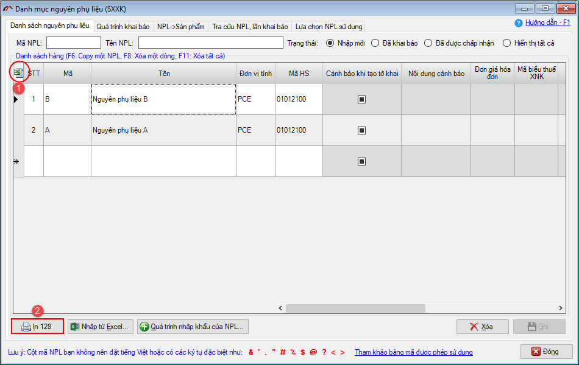
Bản quyền © thuộc về Công ty TNHH Phát triển công nghệ Thái Sơn